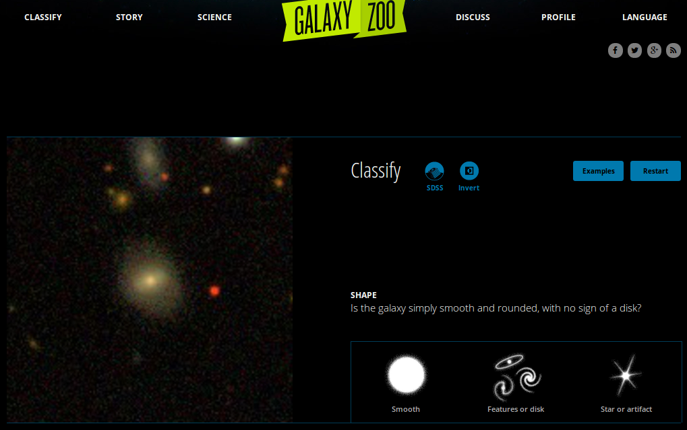
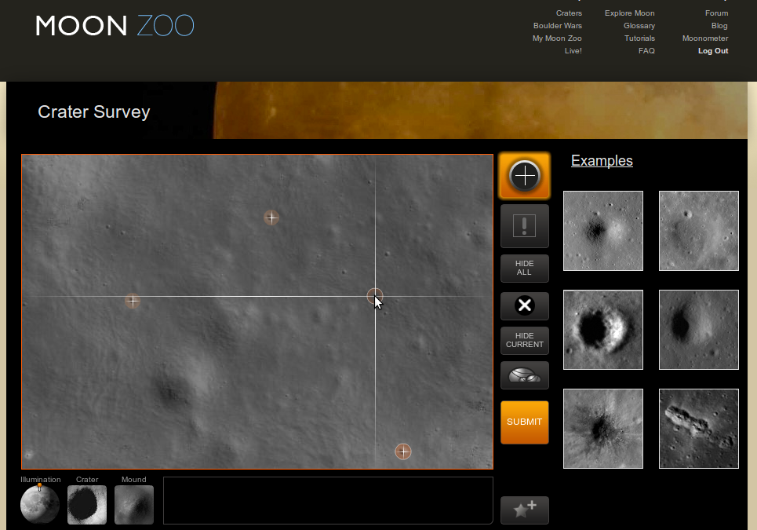
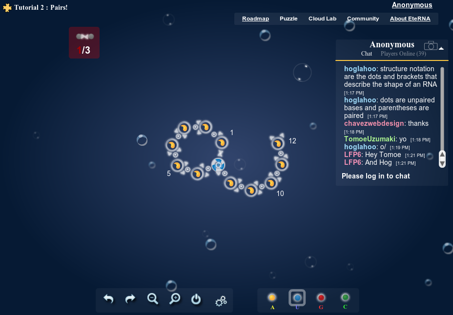
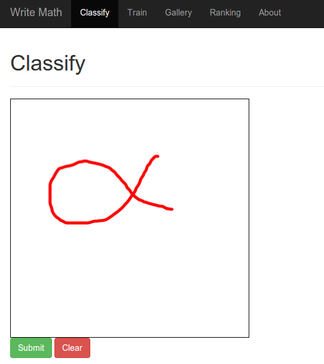

"Citizen Science Projects" are research projects that crowdsource a part of the research work. The idea behind that is quite simple: Some tasks of researchers are very simple. Everybody can do them.
I think some of them are a great example of gamification.
Galaxy Zoo
Galaxy Zoo is a crowdsourced astronomy project which invites people to assist in the classification of galaxies.
You get some images of galaxies and you should identify some characteristics by looking at them. You get about three possible answers to every question.
It looks like this:
{kind=link}

Moon Zoo
High-resolution images of the Moon's surface provided by the Lunar Reconnaissance Orbiter are used by volunteers to create detailed crater counts, mapping the variation in age of lunar rocks.
Source: Wikipedia
It looks like this:
{kind=link}

EteRNA
EteRNA is a browser-based game, developed by scientists at Carnegie Mellon University and Stanford University, that engages users to solve puzzles related to the folding of RNA molecules.
It looks like this:
{kind=link}

Write Math
write-math.com is my own project. The aim of the project is to get fast and accurate recognition of mathematical symbols. To do so, I needed data.
Currently, the project is still under heavy development, and most of the work I do is done offline. Hence the project might not improve until the end of October (2014).
It looks like this:
{kind=link}

The most interesting part might be the interactive preprocessing experiments.
See also
- EteRNA
- Galaxy Zoo: How to take part
- Moon Zoo: How to take part